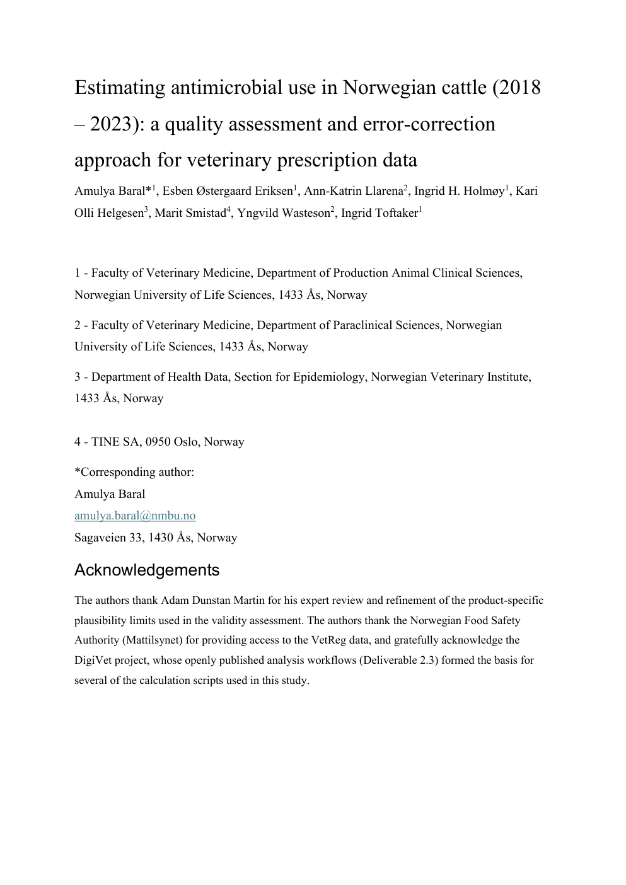
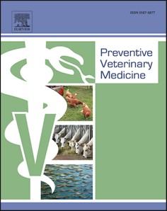
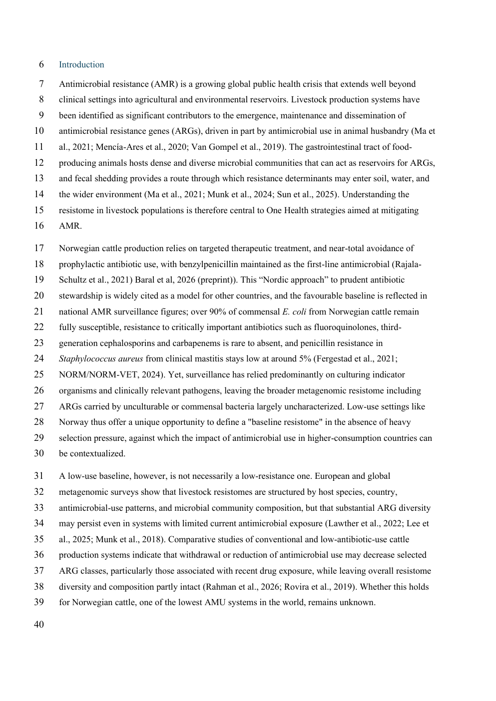
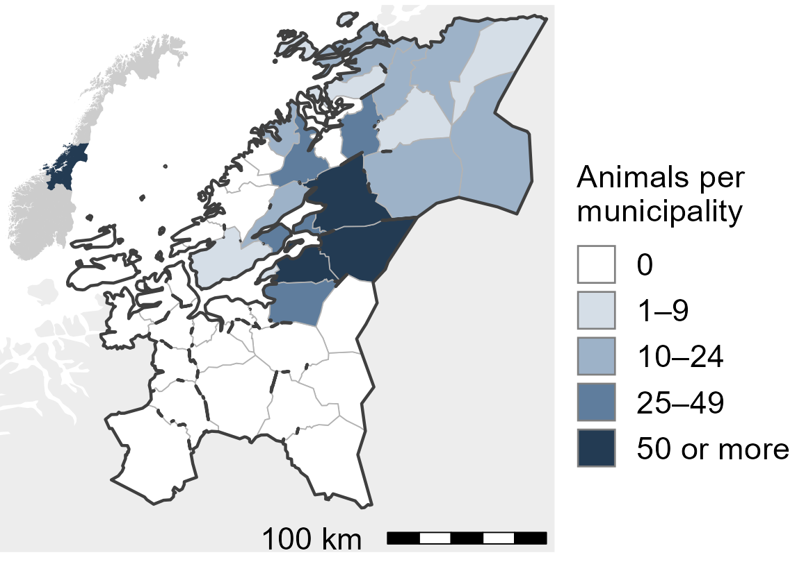
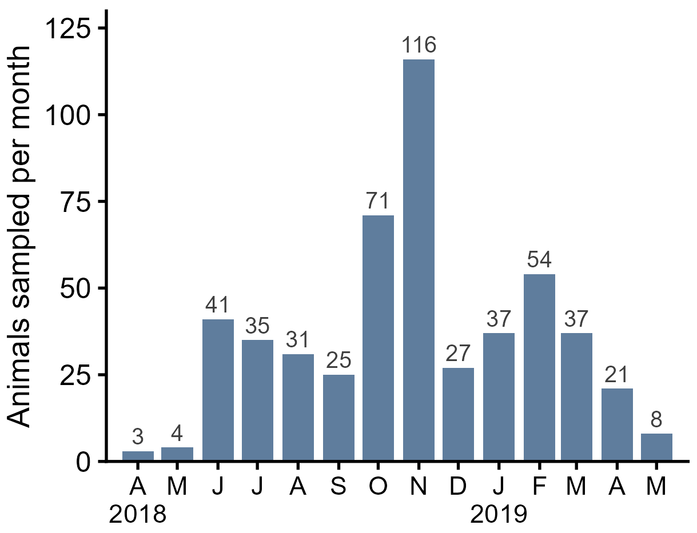
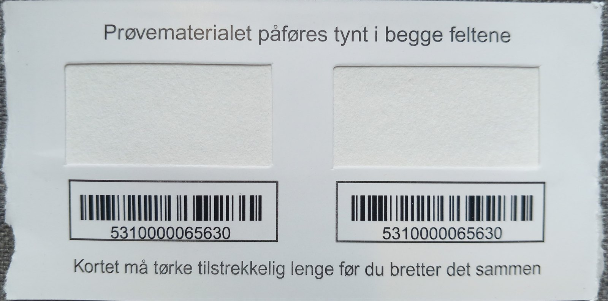
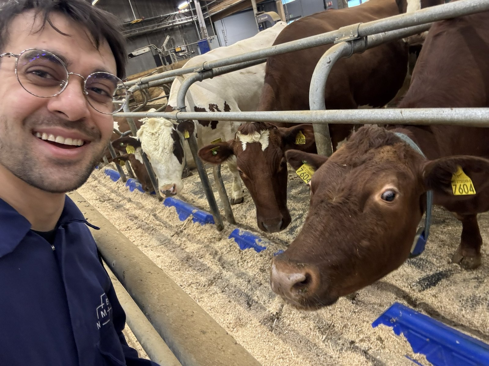
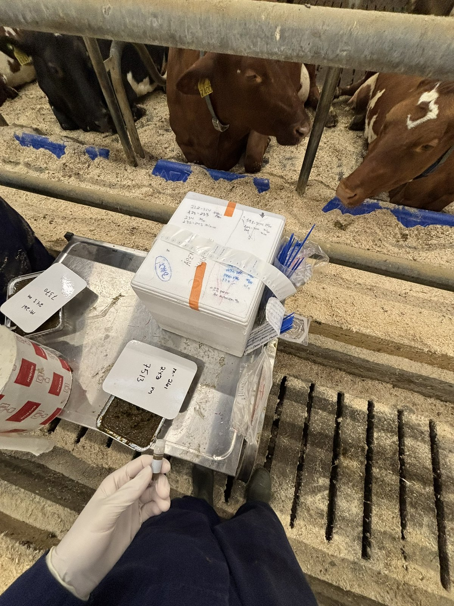
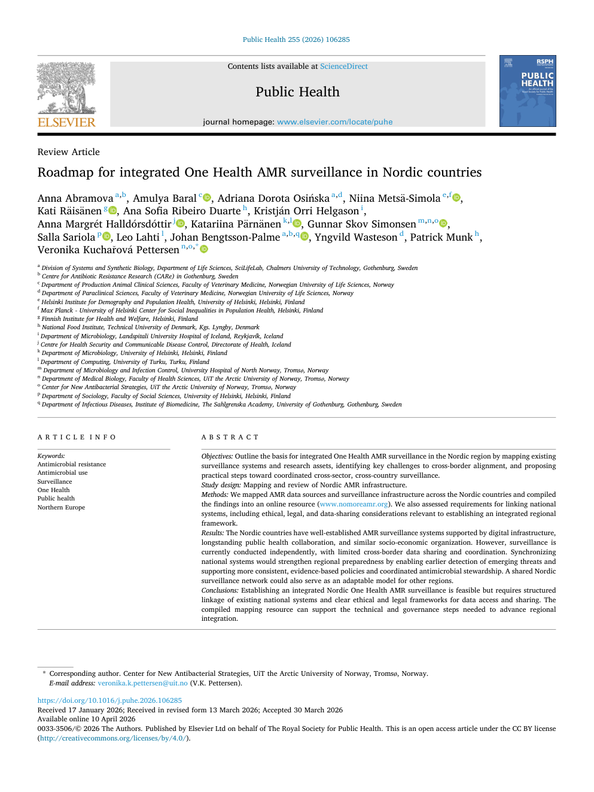

VetReg holds prescriptions back to 2012, but data quality has limited their use, particularly for intramammaries.


Regulation (EU) 2019/6 · EMA 2025 (ESUAvet) · Norway 2009 (FOR-2009-07-03-971) · Grave et al. 2020 · NORM/NORM-VET 2025 · Udhwani et al. 2025 BMC Vet Res · Norström et al. 2026 Prev Vet Med
Birkegård et al. 2018 Zoonoses Public Health · Hopp et al. 2023 (DigiVet D2.3) · EMA 2016 (DDDvet and DCDvet) · Statistics Norway 2025
Plausible quantities: 94.4%
Outside the thresholds: highest proportions for intramammary productsfigures/parts/p1f1-A.pngfigures/parts/p1f1-B.pngfigures/parts/p1f2.pngIntramammary: −64.5%
figures/parts/p1f3-A.pngfigures/parts/p1f3-B.pngfigures/parts/p1f3-C.pngfigures/parts/p1f4-BC.pngIf use is this low, what does the resistome look like?
EMA 2025 (ESUAvet 2024) · Udhwani et al. 2025 BMC Vet Res · Grave et al. 2020 · Norström et al. 2026 Prev Vet Med

NORM/NORM-VET 2023



Llarena et al. 2025 PLOS ONE (card photo: Figure 1, CC BY 4.0) · Woodcroft et al. 2026 (SingleM) · Li et al. 2015 (MEGAHIT) · Zankari et al. 2012 (ResFinder) · Camargo et al. 2024 (geNomad) · Schwengers et al. 2021 (Bakta) · von Meijenfeldt et al. 2019 (CAT) · Clausen et al. 2018 (KMA) · Bonin et al. 2023 (MEGARes)
figures/parts/p2f2-hm.pngfigures/parts/p2f2-legaer.pngfigures/parts/p2f2-legabx.pngfigures/parts/p2f2-legage.pngfigures/parts/p2f2-legsex.pngfigures/parts/p2f2-legna.pngfigures/parts/p2f2-legclr.pngfigures/parts/p2f3-B.pngfigures/parts/p2f3-C0.pngfigures/parts/p2f3-Cl.pngfigures/parts/p2f3-legC.pngfigures/parts/p2f3-legA.pngfigures/parts/p2f2-Cx.pngfigures/parts/p2f3-Dt.pngfigures/parts/p2f3-Dxl.pngfigures/parts/p2-pca-study.pngfigures/parts/p2-pca-stage.pngfigures/parts/p2f4b-A.pngfigures/parts/p2f4-circ.pngfigures/parts/p2f4-legcls.pngfigures/parts/p2f4-legab.pngfigures/parts/p2f4-legmed.pngfigures/parts/p2f4-legctry.pngfigures/parts/p2f4-legplat.pngfigures/parts/p2f4-legunit.pngfigures/parts/p2f4-legdep.pngfigures/parts/p2f4b-dep.pngfigures/parts/p2f4b-leg.pngfigures/parts/p2f5-ADx.pngWhat happens when a new input enters the same gut?
EFSA 2021 / EU authorisation 2022
Duin et al. 2016 PNAS; Kebreab et al. 2023 J Dairy Sci (meta-analysis); EFSA 2021 / EU authorisation 2022


figures/bov-dna-yield.pngBut the granularity is lost during reporting.

European Commission 2018 (One Health Action Plan against AMR) · Davido et al. 2025 Lancet Reg Health Eur · Council Recommendation 2023/C 220/01 · NordForsk NoMoReAMR
Mapped from public reports, surveillance publications and institutional documents into one open resource:
nomoreamr.orgAbramova et al. 2026 Public Health (Table 1, Figures 1 and 2) · Directive (EU) 2024/3019
| Obstacle | Proposed solution |
|---|---|
| Aggregated reporting. Summaries only, no reanalysis. | Systems that give access to the raw data |
| S/I/R reporting. No quantitative results behind it. | Store raw MIC values and disk zone diameters |
| Isolates without diagnosis. No link to patient records. | A secure link from laboratory results to clinical information |
| No real-time sharing. Annual or quarterly reports. | Near-real-time sharing between laboratories, hospitals and public health authorities |
| Sampling bias. Mostly hospital patients and diagnostic samples. | Sample the healthy and the sick in every sector; sewage as a sample of a whole city |
Abramova et al. 2026 Public Health (Table 2)
A model for other regions
Abramova et al. 2026 Public Health
Low: 3.4 mg per kg, down 5%.
A small, mobile core, shaped by the farm.
A resistome check for a methane inhibitor.
A roadmap to link the Nordic systems.
Questions and discussion
Early-life faecal microbiota in lambs is shaped by time rather than neonatal interventions
Bjørnevik SV, Baral A, Noyes N, Knauer W, Rodriguez-Campos S, Martin AD. Submitted, under revision
PanRes: A database of latent and acquired antimicrobial resistance allowing 3D-based protein homology search
Vojtková M, Baltušis M, Martiny HM, Baral A, Pyrounakis N, Beleon A, Freitag R, Pico-Tomàs A, Kaas RS, Petersen TN, Munk P. bioRxiv preprint, 2026
Genomic diversity and virulence of Pasteurella multocida in Norwegian calves
Ahmadi A, Oma VS, Ånestad LM, Falkeid SE, Baral A, Khezri A, Klem TB, Stokstad M, Llarena AK. Microbial Genomics, 2026
Calibrating for absolute microbiome abundances without spike-ins
de Wit NT, Baral A, Fuschi A, Jacobs G, de Rijk S, van der Plaats RQJ, et al. bioRxiv preprint, 2026
Plastispheres as reservoirs of antimicrobial resistance: Insights from metagenomic analyses across aquatic environments
Witsø IL, Baral A, Llarena AK, Aspholm M, Myrmel M, Wasteson Y. PLOS ONE, 2025
openpathogen enables client-side pathogen profiling from the browser using WebAssembly
Baral A. openpathogen.org · open source
| →SpacePgDn | Next point, then next card (also click, or swipe left) |
| ←PgUpBackspace | Back (also right-click, or swipe right) |
| OEsc | Overview of the whole system; click a chapter to jump there |
| 1 – 5 | Jump to a chapter |
| F | Fullscreen |
| N | Presenter notes |
| T | Elapsed-time clock |
| B | Black screen |
| HomeEnd | First or last card |
Figures load from the figures folder next to this file. The web address remembers where you are, so a reload comes back to the same card.